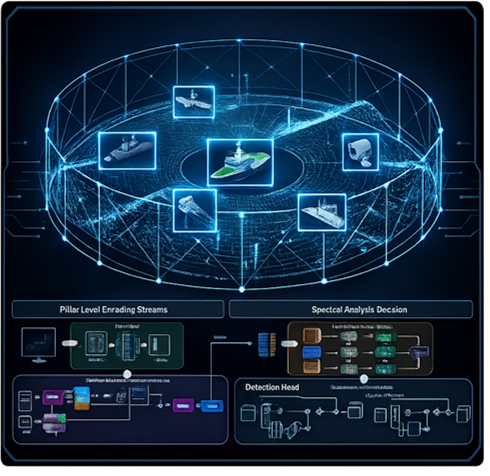
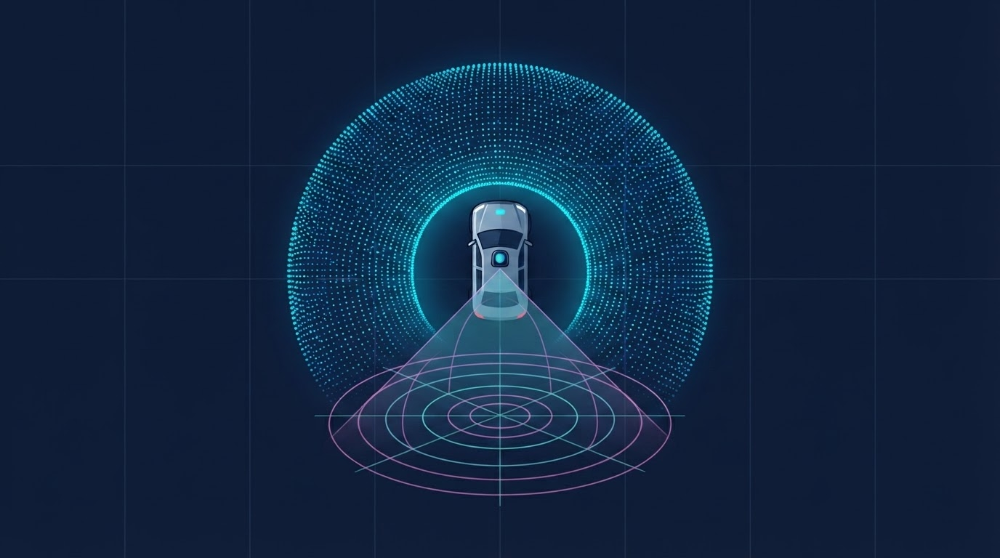
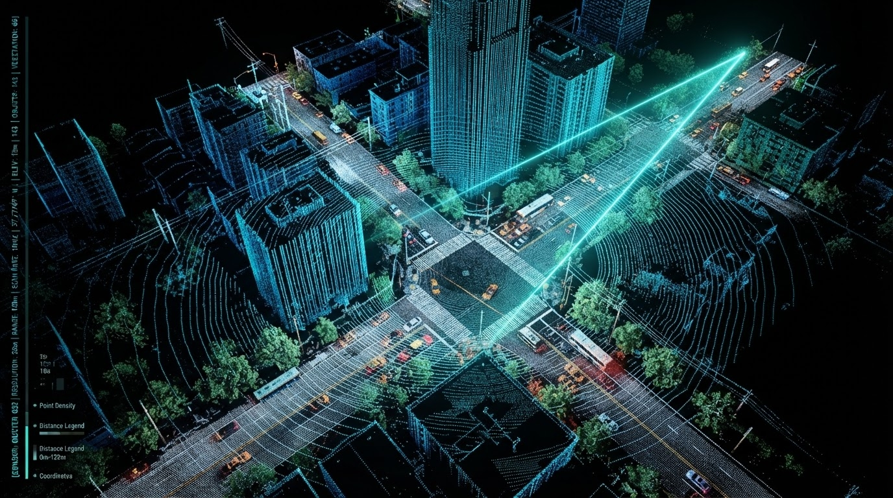
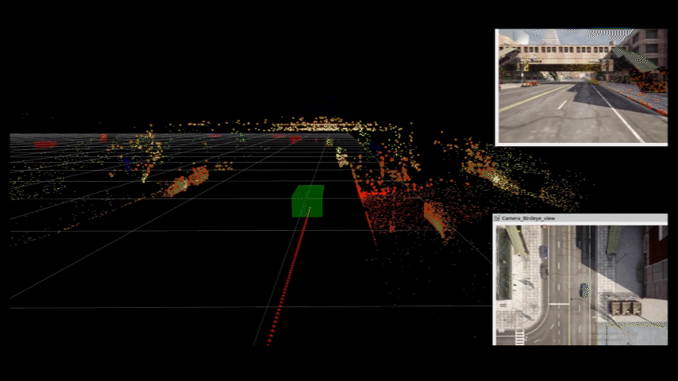

Four Pillars of
Perception.
인지 기술의 네 기둥.
DeepFusion AI의 4가지 핵심 기술은 눈, 비, 어둠 속에서도 완벽한 자율 시스템 인지를 가능하게 합니다.
우리의 인지 철학
4D 이미징 레이다는 거리, 방향, 높이와 속도 정보를 직접 측정하고, 악천후와 저조도 환경에서도 안정적으로 주변 공간을 인식할 수 있는 핵심 센서입니다. DeepFusion AI는 4D 이미징 레이다의 고유한 특성을 AI로 해석하여 객체 인지, 추적, 위치 추정 및 지도 작성까지 연결하는 레이다 중심의 공간 인지 기술을 개발합니다.
이를 기반으로 카메라·라이다와의 멀티모달 융합, 합성 데이터 생성 및 AI 학습 기술까지 확장하여, 날씨와 조도 변화, GPS 음영 환경 등 다양한 운용 조건에서도 안정적인 자율 시스템용 인지 기술을 구현합니다.
Perceptive Sensor Fusion Engine
Camera, LiDAR, and 4D Imaging Radar Early Fusion
Radar-Native Perception AI
4D 이미징 레이다 특화 실시간 객체 인지
4D 이미징 레이다의 고유한 신호 측정 특성에 최적화된 독자적인 딥러닝 기술입니다. 3차원 위치, 거리, 속도 정보 등의 희소성(Sparsity)과 노이즈를 극복하여 주변 객체를 고속으로 검출하고 연속 추적합니다. 특히 멀티 레이다 기반으로 360도 전방위 인지를 수행하는 RAPA 플랫폼은 그 기술력을 인정받아 CES 2026 AI 부문 최고혁신상을 수상했습니다.
핵심 역량
- 4D 이미징 레이다의 공간·속도·신호 정보를 활용하는 레이다 특화 AI 모델
- 멀티 레이다 기반 360도 전방위 환경 인지
- 레이다 데이터 전처리를 통한 데이터 품질 향상
- 검출 객체의 연속 추적 및 이동 상태 인지
- 임베디드 시스템에 최적화된 실시간 인지 및 처리 기술


Radar-Centric Multimodal 3D Fusion
레이다 중심 멀티센서 3D 공간 인지
4D 이미징 레이다의 거리·속도 정보, 카메라의 시각적 형태 정보, 라이다의 정밀한 공간 구조를 공통 3D 좌표계에서 실시간 융합하는 기술입니다. 단일 센서의 물리적 한계를 넘어 기상 악화나 급격한 조도 변화 속에서도 주변을 입체적이고 정밀하게 인지합니다.
핵심 역량
- 4D 이미징 레이다 중심의 카메라·라이다 센서 융합
- 이종 센서 데이터의 좌표 정합 및 시간 동기화
- 센서별 공간 정보와 의미 정보의 통합
- 멀티모달 데이터 기반 3D 객체 검출 및 공간 정보 생성
- 센서 구성과 적용 환경에 대응하는 확장형 인지 모델
Real-time 4D Radar SLAM
4D 레이다 기반 실시간 동시 위치 추정 및 지도 작성
전파 반사 데이터를 실시간으로 매핑하여 이동체의 정밀 위치와 자세를 추정함과 동시에 주변 공간의 3D 지도를 생성합니다. GPS 수신이 불가능한 지하주차장, 어두운 물류창고, 먼지가 가득한 공장 등에서도 중단 없는 고정밀 위치 인식과 경로 설정을 지원합니다.
핵심 역량
- 4D 이미징 레이다 기반 실시간 위치 및 자세 추정
- SLAM 기반 동시 위치 추정 및 지도 작성
- 이동 경로와 주변 구조물의 지속적인 공간 인식
- GPS 사용이 제한되는 환경에서의 위치 인식 지원


Virtual Radar & AI Training Framework
가상 레이다 기반 합성 데이터 생성 및 AI 학습 체계
물리적 수집 한계를 극복하는 가상 레이다 환경 구축 및 합성 데이터셋 생성 플랫폼입니다. 구하기 어려운 희귀 시나리오 데이터를 가상 공간에서 효율적으로 확보해 AI 모델을 사전 학습시키며, 사전 학습 모델 기반의 Auto-Labeling 기술로 실제 데이터의 구축과 최적화 효율을 극대화합니다.
핵심 역량
- 4D 이미징 레이다 특성을 반영한 가상 레이다 센서 환경 구축
- 다양한 객체와 운용 조건을 반영한 합성 데이터셋 생성
- 합성 데이터 기반 AI 모델 사전학습
- 사전학습 모델을 활용한 Auto-Labeling 및 데이터 구축 효율화
- 고객의 센서 구성과 적용 환경에 맞춘 모델 추가 학습 및 최적화 지원
기술 확장성 (Technology Scalability)
다양한 센서 구성
레이다 단독 인지부터 카메라·라이다와 결합한 이종 센서 조기 융합까지 타겟 환경에 맞춰 유연하게 구성합니다.
다양한 운용 환경
악천후, 저조도, GPS 음영 및 먼지나 연기가 가득한 극한의 산업 현장에서도 신뢰성 높은 성능을 보장합니다.
실시간 엣지 적용
차량 및 로봇 임베디드 보드에 최적화하여 고성능 GPU 서버 없이도 실시간 저지연 추론을 수행합니다.
데이터 및 모델 확장
합성 데이터 및 Auto-Labeling 프레임워크를 기반으로 새로운 환경과 센서 레이아웃에 맞춰 AI 모델을 빠르게 튜닝합니다.
기술 신뢰성 인증 현황
방산 적합성 실증
육군 지상 작전 차량 탑재 주행 실증 실적 보유
해상 전천후 실증
해안선 및 도서 지역 해무·강우 조건 하 파도 탐지 1,000시간 누적
특허 지식 재산
레이다 신호 필터링 및 딥러닝 융합 특허 출원 3건 완료
미래의 인지 기술,
함께 만들어가시겠습니까?
DFAI는 방산·해양·자동차 분야의 파트너와 새로운 자율 시스템을 만들어가고 있습니다.